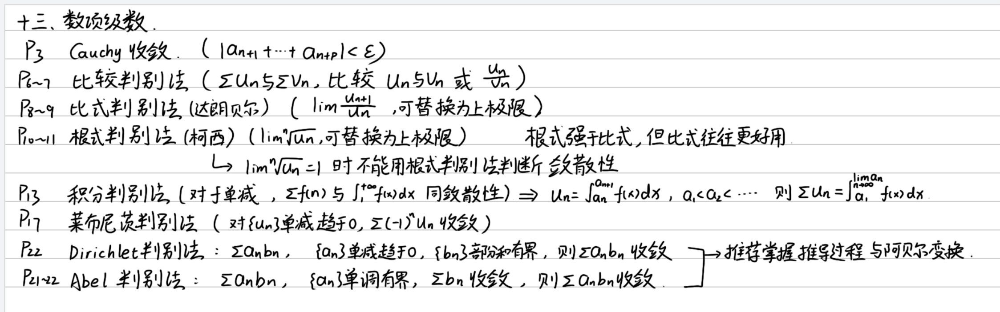
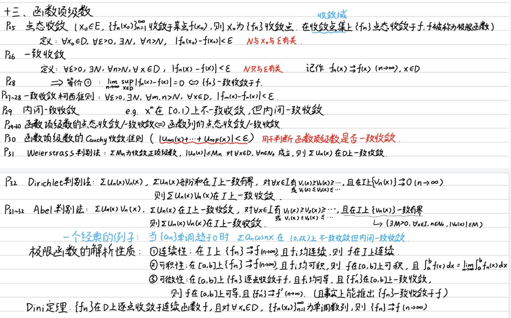
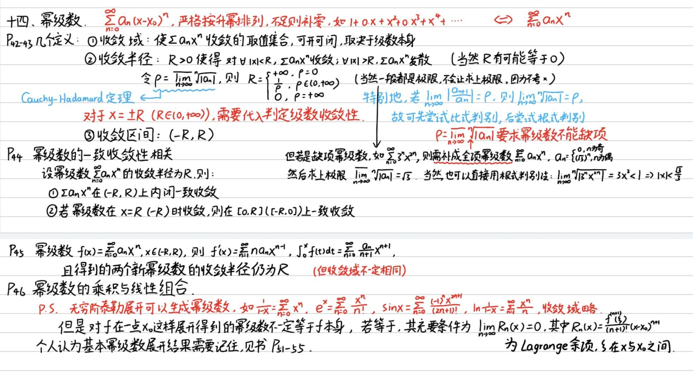
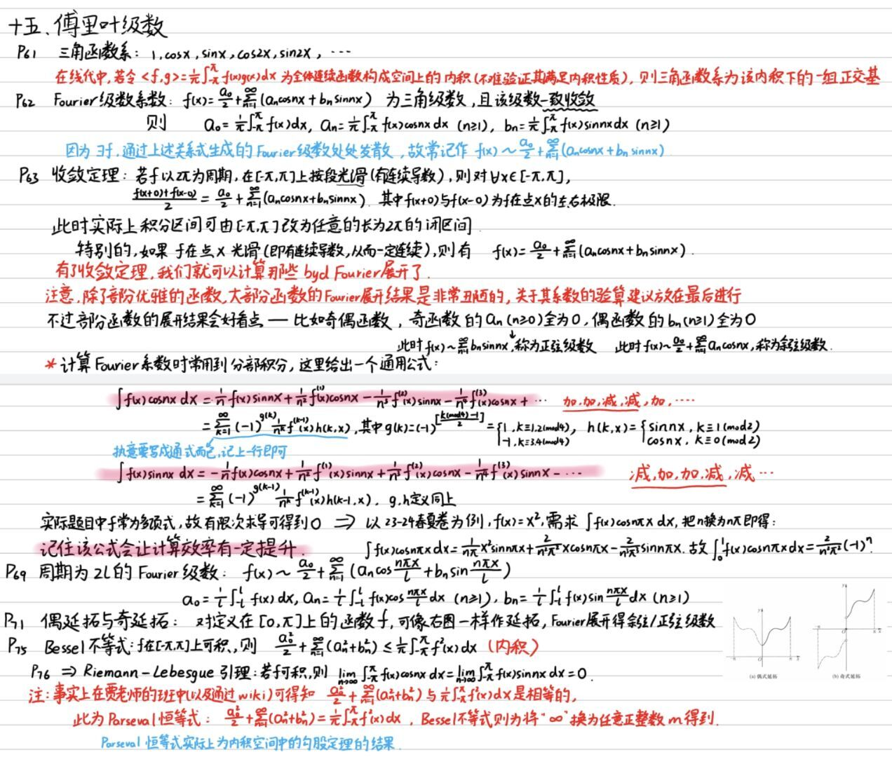

数学分析 ¶
老登们吃过的矢 ¶
妈的再不背要死了 ¶
- 二元函数微分定义(P102)：设函数 $ z=f(x,y) $ 在点 $ P_0(x_0,y_0) $ 的某邻域 $ U(P_0) $ 上有定义，对于 $ U(P_0) $ 中的点 $ P(x,y)=(x_0+\Delta x,y_0+\Delta y) $ ，若函数 $ f $ 在点 $ P_0 $ 处的全增量 $ \Delta z $ 可表示为
$$ \Delta z=f(x_0+\Delta x,y_0+\Delta y)-f(x_0,y_0) \newline =A\Delta x+B\Delta y+\omicron(\rho) \tag{1} $$
其中 $ A,B $ 是仅与点 $ P_0 $ 有关的常数， $ \rho=\sqrt{\Delta x^2+\Delta y^2} $ ， $ \omicron(\rho) $ 是较 $ \rho $ 高阶的无穷小量 . 则称函数 $ f $ 在点 $ P_0 $ 可微，并称 (1) 式中关于 $ \Delta x, \Delta y $ 的线性函数 $ A\Delta x+B\Delta y $ 为函数 $ f $ 在点 $ P_0 $ 的全微分，记作
$$ \mathrm{d}z|_{P_0}=\mathrm{d}f(x_0,y_0)=A\Delta x+B\Delta y \tag{2} $$
- Jacobi: 矩阵横向为同一原变量对所有新变量的偏导，纵向为所有原变量对同一新变量的偏导 . 取矩阵的行列式值，结果为换元后应乘函数 .
Jacobi 常见换元详见奇技淫巧 #4
- 函数项级数一致收敛的 Cauchy 准则：函数项级数 $ \Sigma u_n(x) $ 在数集 $ D $ 上一致收敛的充要条件为：对任给的正数 $ \epsilon $ ，总存在某正整数 $ N $ ，使得当 $ n>N $ 时，对一切 $ x\in D $ 和一切正整数 $ p $ ，都有 $$ |S_{n+p}(x)-S_{n}(x)|<\epsilon $$ 或 $$ |u_{n+1}(x)+u_{n+2}(x)+...+u_{n+p}(x)|<\epsilon $$ 此定理中当 $ p=1 $ 时，得到的函数项级一致收敛的一个必要条件.
-
函数项级数的一致收敛性 Weierstrass 判别法（M 判别法 / 优级数判别法
） ：设函数项级数 $ \Sigma u_{n}(x) $ 定义在数集 $ D $ 上， $ \Sigma M_n $ 为收敛的正项级数，若对一切 $ x\in D $ ，有 $ |u_{n}(x)| \leq M_n , n=1,2,... $ 则函数项级数 $ \Sigma u_{n}(x) $ 在 $ D $ 上一致收敛 . -
函数项级数的一致收敛性 Abel 判别法：设 :
(i) $ \Sigma u_{n}(x) $ 在区间 $ I $ 上一致收敛;
(ii) 对于每一个 $ x\in I, {v_{n}(x)} $ 是单调的;
(iii) $ {v_{n}(x)} $ 在 $ I $ 上一致有界，即存在正数 $ M $ ，使得对一切 $ x\in I $ 和正整数 $ n $ ，有 $ |v_{n}(x)|\leq M $ ,
则级数 $ \Sigma u_{n}(x)v_{n}(x) $ 在 $ I $ 上一致收敛. -
函数项级数的一致收敛性 Dirichlet 判别法：设 :
(i) $ \Sigma u_{n}(x) $ 的部分和函数列 $ S_n(x)=\Sigma_{k=1}^{n}u_k(x), (n=1,2,...) $ 在 $ I $ 上一致有界;
(ii) 对于每一个 $ x\in I, {v_{n}(x)} $ 是单调的;
(iii) 在 $ I $ 上 $ v_n(x)\rightrightarrows 0(n\rightarrow\infty) $
则级数 $ \Sigma u_{n}(x)v_{n}(x) $ 在 $ I $ 上一致收敛.
- 函数项级数的內闭一致收敛定义：设函数列 $ {f_n} $ 与 $ f $ 定义在区间 $ I $ 上，若对任意闭区间 $ [a,b]\sub I $ ， $ {f_n} $ 在 $ [a,b] $ 上一致收敛于 $ f $ ，则称 $ {f_n} $ 在 $ I $ 上内闭一致收敛于 $ f $ .
- Fourier 级数展开：若 $ f $ 是以 $ 2\pi $ 为周期且在 $ [-\pi,\pi] $ 上可积的函数，则有
其中
若以 $ 2l $ 为周期，那么可以使用如下替换：
有：
其中
注：9/10 看不懂可以看奇技淫巧 #2
- 第一型曲线积分计算：一堆定义看书去P185 定义 1. 第一型曲线积分形如：
计算方法：
若曲线 $ L $ 被表示为 $ y=\psi(x), x\in [a,b] $ 时，有：
即令 $ x=t, y=\psi(t) $. 其中 \(\varphi'^2(t)=1\)
以上情况也可以在 $ x=\varphi(y) $ 时成立，反向替换即可 .
- 第二型曲线积分计算： 一堆定义看书去P190 定义 1. 第二型曲线积分形如：
上式中 $ L $ 可以用 $ \overgroup{AB} $ 替换 .
计算方式是
- Green 公式：对有界闭区域 $ D $ ，若上面的函数 $ P(x,y), Q(x,y) $ 有连续的一阶偏导数，且 $ D $ 的边界是逐段光滑的，那么可以有格林公式
其中积分方向沿曲线正向（曲线在积分方向左侧）
注：12/13 看不懂可以看奇技淫巧 #3
- 第一型曲面积分：定义一堆P259 定义 1. 形如：
计算方法：
其中 \(z_x\) 表示 \(z\) 对 \(x\) 求偏导
- 第二型曲面积分：定义一堆P264 定义 1. 形如：
计算方法直接把 $ z(x,y) $ 套进去即可 . 也就是用 \(x,y\) 替换 \(z\).
- 链式法则：$ \dfrac{\partial f(u,v)}{\partial x} = \dfrac{\partial f}{\partial u}\cdot\dfrac{\partial u}{\partial x} + \dfrac{\partial f}{\partial v}\cdot\dfrac{\partial v}{\partial x}$
- 拉格朗日乘数法：对于一个 $ n $ 元函数，希望在条件限制下求其极值，可以使用拉格朗日乘数法 . 例如 23-24 年第四题 . 操作方法是：首先确定目标多元函数 $ f(x,y,...) $ 和限制条件（等式） $ Con(x,y,...)=0 $. 引入一个新变量 \(\lambda\). 设一新函数 $ F(x,y,...,\lambda) = f(x,y,...) + \lambda Con(x,y,...) $. 对 $ F $ 的每一项均进行求偏导操作，并使每一项值均为 0. 根据所得到的 $ n+1 $ 个等式，可以求出 $ n $ 个变量的值 . 这些值下，原函数 $ f(x,y,...) $ 取极值 .注意对 \(\lambda\) 求偏导的式子可能会大大简化运算.
-
给定空间曲线求法线及法平面，方法为：对其中任一变量求偏导 . 例如选择 $ x $ . 求偏导时，对于不包含该变量的式子，使用链式法则，令其对另一变量求偏导，然后乘另一变量对选定变量的偏导 . 例如选择 $ x $ 后，对于 $ y^2 $，可以求 $ \frac{\partial(y^2)}{\partial y}\cdot\frac{\partial y}{\partial x} = 2y\frac{\partial y}{\partial x}$ . 得到方程后带入指定点坐标，解出其他变量对选定变量的偏导，可以确定法线方向向量 $ \overrightarrow{v}=(\frac{\partial x}{\partial t},\frac{\partial y}{\partial t},\frac{\partial z}{\partial t}) $ . 其中 $ t $ 是选中的向量，例如上述过程中选中了 $ x $ ，那么方向向量即为 $ \overrightarrow{v}=(1,\frac{\partial y}{\partial x},\frac{\partial z}{\partial x}) $ . 由法线方向向量写法线：$ \frac{x}{\overrightarrow{v}_x}=\frac{y}{\overrightarrow{v}_y}=\frac{z}{\overrightarrow{v}_z} $ ；由法线方向向量写法平面： $ (x-\overrightarrow{v}_x)+(y-\overrightarrow{v}_y)+(z-\overrightarrow{v}_z)=0 $ .
-
隐函数存在定理 : 对于由二元等式 $ F(x,y)=0 $ 确定的隐函数，对于某一点，若：
(i) $ F(x_0,y_0) = 0 $ ;
(ii) $ F(x,y) $ 和 $ F_y(x,y) $ 在 \((x_0,y_0)\) 附近某一领域连续;
(iii) $ F_y(x_0,y_0)\neq 0 $
那么在 \((x_0,y_0)\) 附近，二元等式 $ F(x,y)=0 $ 惟一确定一个隐函数.且其确定的隐函数导数 \(y'(x)=-\frac{F_x(x,y)}{F_y(x,y)}\) .
byd 奇技淫巧 ¶
- $ 1+\sin x = (\sin\frac{x}{2}+\cos\frac{x}{2})^2 $
- 第一二型曲线积分：对于一段曲线， $ \mathrm{d}s $ 就是一型，$ \text{ 一堆 } \mathrm{d}x + \text{ 另一堆 } \mathrm{d}y $ 就是二型 . 计算方法：把 $ x $ 和 $ y $ 替换成 $ t $ ，注意换元时对应积分的改换 . 对于 $ \mathrm{d}s $ ，其替换结果是各替换项平方和的算术平方根（即 \(\sqrt{f_x'^2(t)+f_y'^2{t}+...}\) ，在这里 \(f_x(t)\) 代表 \(x\) 对于 \(t\) 的函数）. 如果 $ x $ 和 $ y $ 已经有等量关系了，直接令自变量为 $ t $ . 然后带入原式子求积分就行了 . 积分上下限取得是 $ t $ 的可求范围
- 第一二型曲面积分：对于一块曲面， $ dS $ 就是一型， $ dxdy $ 就是二型 . 一型只要把 \(z\) 带进去再乘 \(\sqrt{1+z_x^2+z_y^2}\) 即可 . 二型只要把 \(z\) 带进去即可 .注意二型有时出现 $ \mathrm{d}z $，需要用 Jacobi 换元 .
- Jacobi 常用两换元：
二元换元：令 $ x=r\cos\theta, y=r\sin\theta $;
三元换元：令 $ x=r\sin\theta \cos\phi, y=r\sin\theta \sin\phi, z=r\cos\theta $ $$ \mathrm{d}S=r\mathrm{d}r\mathrm{d}\theta \newline \mathrm{d}V=r^2 \sin\theta \mathrm{d}r\mathrm{d}\theta \mathrm{d}\phi $$ 二元先积 $ r $ 再积 $ \theta $ ，三元先积 $ r $ 再积 $ \theta $ 最后积 $ \phi $
-
$ F(x,y,...)=\sqrt{(x-x_0)^2+(y-y_0)^2+...}$ 时，有 $ \dfrac{\partial F}{\partial x} = \dfrac{x-x_0}{F(x,y,...)} $
-
$ \displaystyle \sum_{k=1}^{n}\cos kx=\frac{1}{2\sin{\frac{x}{2}}}(\sin{(n+\frac{1}{2})x}-\sin{\frac{x}{2}})\leq\frac{1}{2\sin{\frac{x}{2}}}-1$
-
$ \sqrt{a}-\sqrt{b}=\frac{a-b}{\sqrt{a}+\sqrt{b}} $
学姐笔记 ¶



